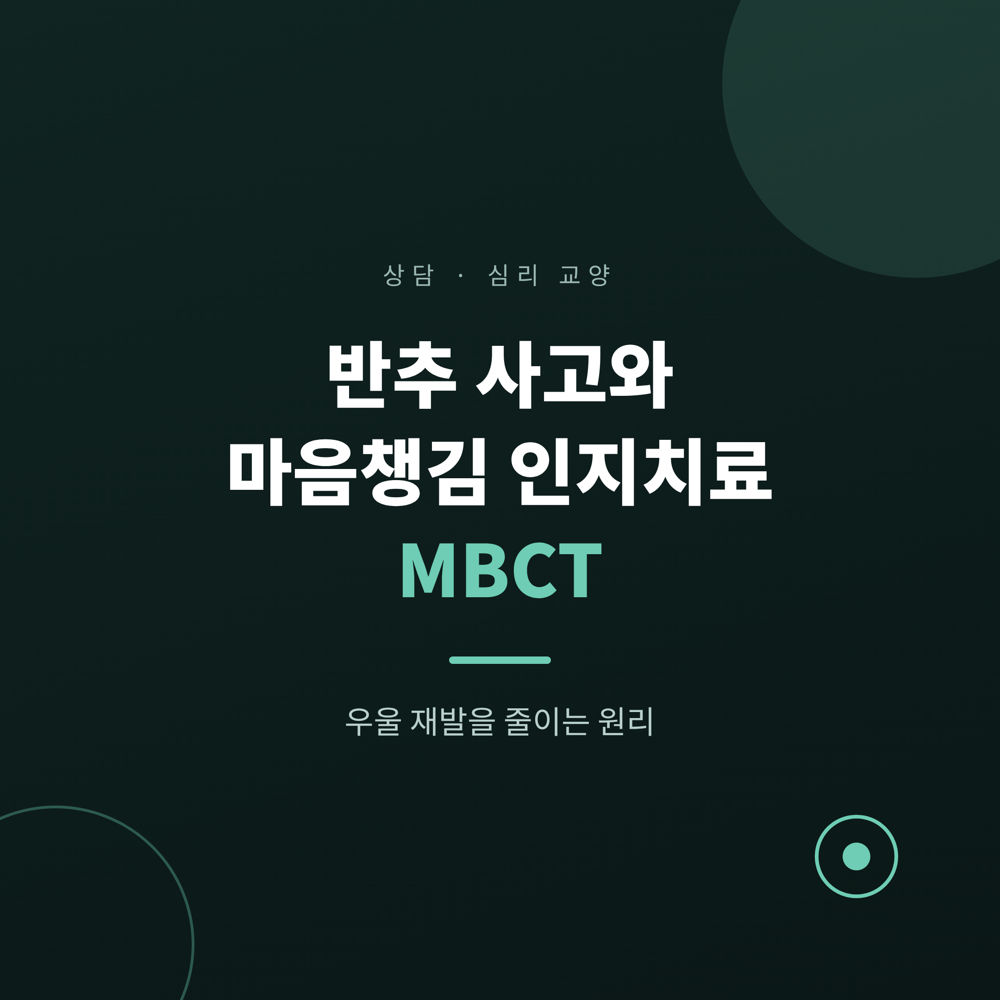
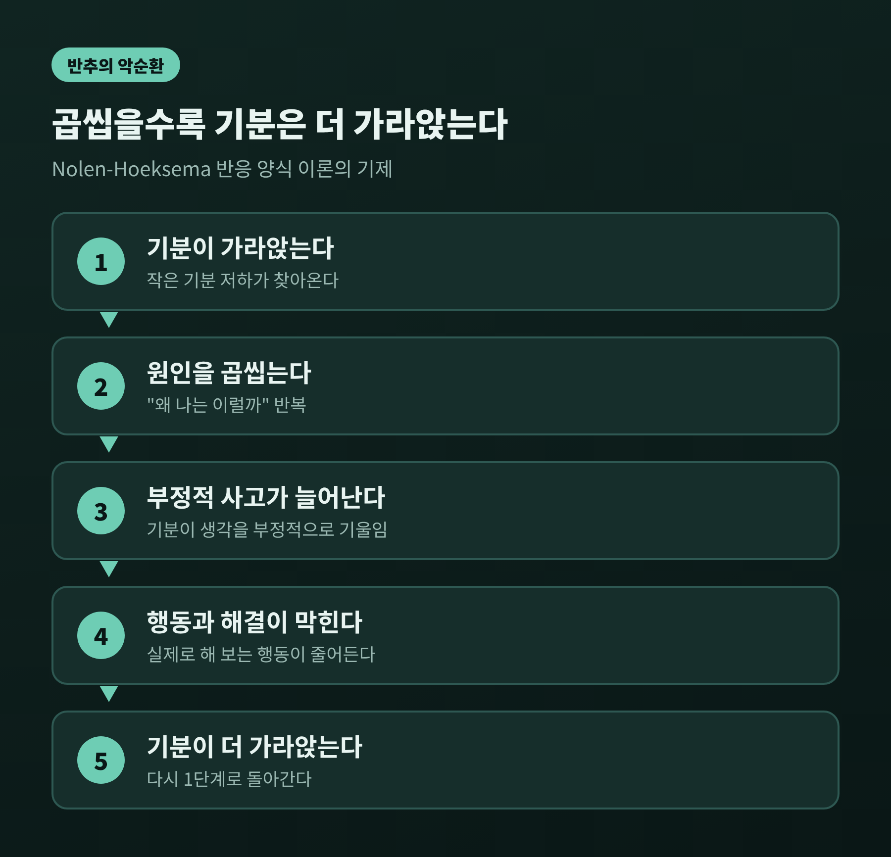
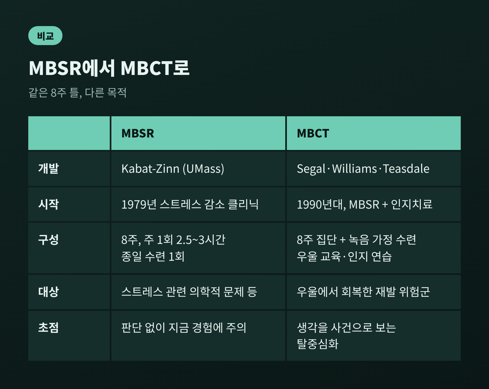
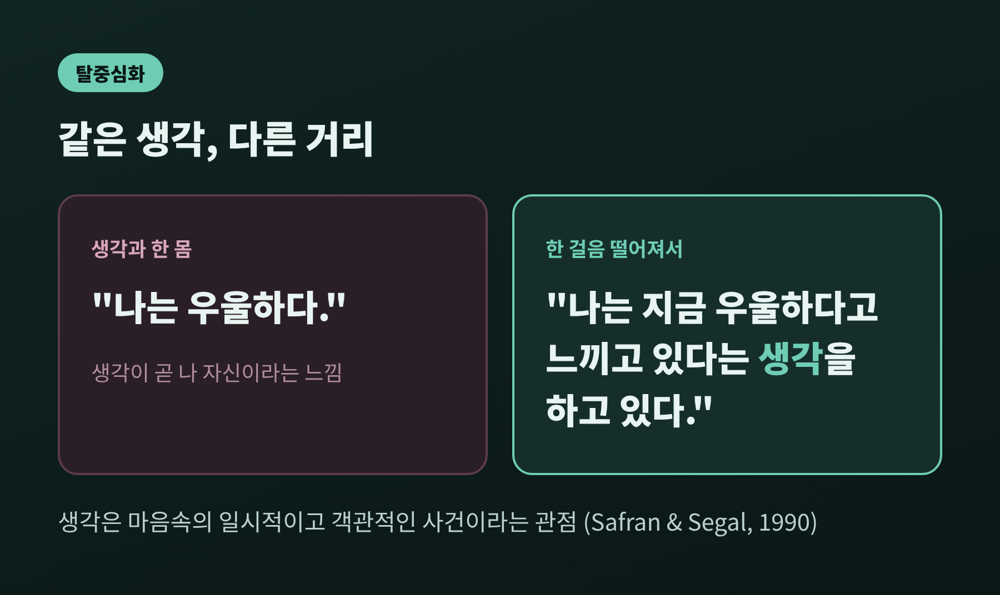
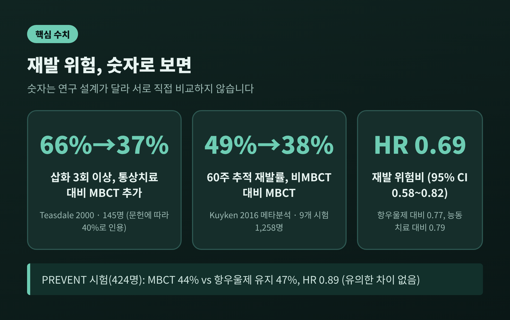
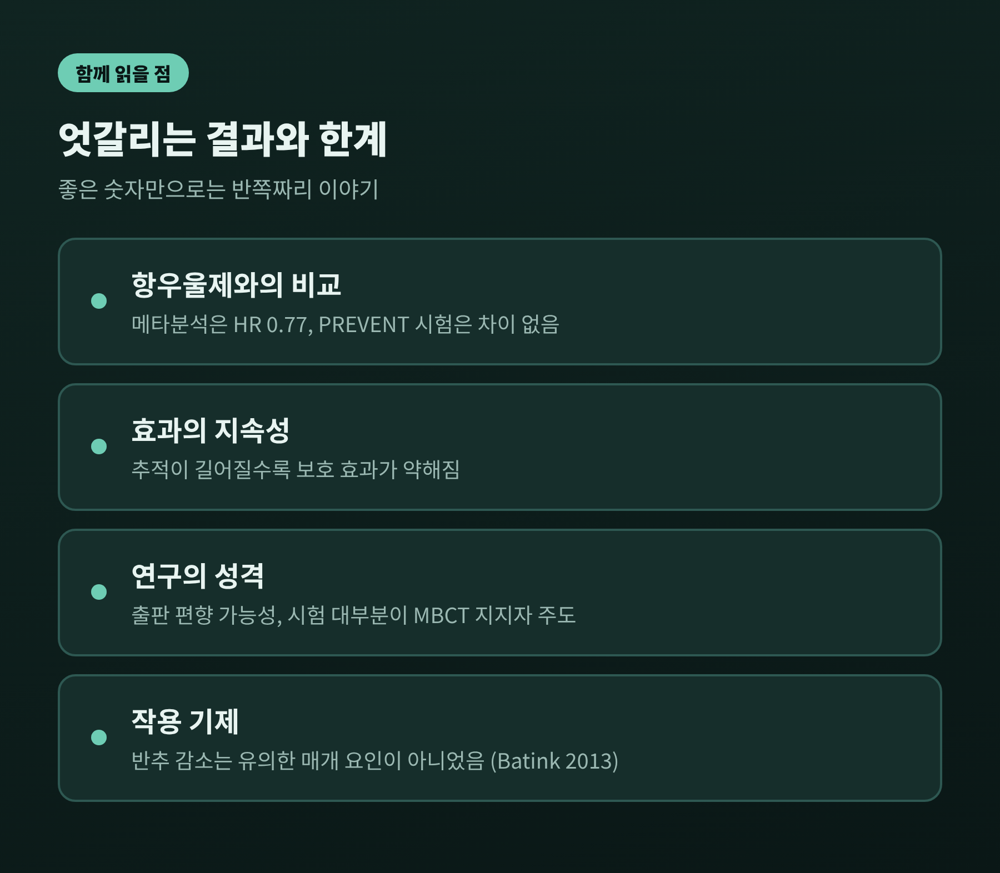

반추 사고와 마음챙김 인지치료 MBCT, 우울 재발을 줄이는 원리

이번 글에서는 같은 생각을 되씹는 반추 사고가 우울을 어떻게 붙잡아 두는지 정리해 보겠습니다.
이어서 생각을 사실이 아닌 하나의 사건으로 바라보는 훈련, 곧 마음챙김 기반 인지치료(MBCT)와 MBSR이 재발 방지에서 어떤 근거를 가지는지 살펴봅니다.
심리상담 교양 차원의 안내이며, 개인의 진단이나 치료를 대신하지 않습니다.
세 줄 요약
- 반추는 증상과 그 원인, 결과를 계속 곱씹는 반응 방식으로, 우울을 오래 끄는 요인으로 연구되어 왔습니다.
- MBCT는 생각을 '마음속의 일시적 사건'으로 보는 탈중심화를 익혀 재발의 고리를 약하게 만들려는 8주 프로그램입니다.
- 재발 위험은 통상치료보다 낮았지만(HR 0.69), 항우울제 유지와는 큰 차이가 없다는 결과도 함께 있습니다.
반추 사고란 무엇인가
반추는 소가 먹이를 되새기듯 같은 생각을 반복해서 씹는 일입니다.
"왜 나는 이럴까." "무엇이 잘못된 걸까." 이런 질문이 답 없이 맴도는 모습이 전형적입니다.
이 개념을 체계화한 사람은 심리학자 수전 놀런-혹시마(Susan Nolen-Hoeksema)입니다.
1991년 논문에서 그는 '반응 양식 이론'을 내놓았습니다.
우울한 기분이 들었을 때 어떻게 반응하느냐가 우울이 얼마나 오래 가느냐를 좌우한다는 주장입니다.
그의 구분은 단순합니다.
증상과 그 원인, 결과에 주의를 모으는 반추적 반응은 우울을 연장합니다.
주의를 다른 활동으로 돌리는 반응은 더 짧은 우울과 연결되었습니다.
문제는 반추가 겉으로는 문제 해결처럼 보인다는 점입니다.
곰곰이 생각하면 답이 나올 것 같지만, 실제로는 기분이 사고를 부정적으로 기울이고 실제 행동을 방해합니다.
이론이 제안한 기제가 바로 이것입니다.

반추는 우울에 어떤 흔적을 남기는가
2008년의 종합 리뷰(Perspectives on Psychological Science)는 그동안의 연구를 정리했습니다.
반추는 우울을 악화시키고, 부정적 사고를 늘리고, 문제 해결을 해치고, 주변의 사회적 지지를 갉아먹는 것으로 비교적 잘 뒷받침된다고 합니다.
불안, 폭식, 폭음, 자해와도 연관이 보고되었습니다.
조금 더 섬세한 지점도 있습니다.
반추는 우울의 지속 기간보다 발병을 더 일관되게 예측했고, 부정적인 사고방식과 겹칠 때 증상이 이어지는 기간을 예측했습니다.
또 같은 리뷰는 반추와 '적응적인 자기성찰'을 구분해서 다룹니다.
무엇이든 돌아보는 일이 모두 해롭다는 뜻은 아닙니다.
기분전환에 대한 결과도 단순하지 않습니다.
상관 연구에서는 즐거운 활동이 낮은 우울과 일관되게 이어지지 않았지만, 실험 연구에서는 우울한 기분을 덜어 주었습니다.
한 가지 처방이 모두에게 맞는다고 보기는 어렵다는 이야기입니다.
연구자는 이런 현상이 성별 차이와도 관련될 수 있다고 보았습니다.
우울을 겪는 여성이 남성의 두 배쯤 된다는 점을 두고, 여성의 반추 경향이 한 가지 이유일 수 있다는 가설을 세웠습니다.
다만 이는 가설 수준의 설명입니다.
회복 뒤에도 남는 연결: 재발은 왜 일어나는가
우울에서 회복한 뒤에도 재발은 흔한 문제입니다.
MBCT를 만든 시걸(Segal), 윌리엄스(Williams), 티즈데일(Teasdale)은 '인지적 반응성'이라는 설명을 내놓았습니다.
우울 삽화 중에는 저조한 기분, 부정적인 생각, 몸의 감각이 서로 단단히 묶입니다.
회복해도 그 연결은 남아 있습니다.
그래서 가벼운 기분 저하가 찾아와도 묶음 전체가 되살아나 부정적 사고가 다시 돌고, 심하면 한 번의 삽화로 이어질 수 있습니다.
여기서 반추가 불씨 역할을 합니다.
"뭐가 잘못됐지?"라고 묻는 일은 문제 해결처럼 느껴지지만, 오히려 저조한 기분을 깊게 만듭니다.
그렇다면 생각의 내용을 고치기보다 생각과 맺는 관계를 바꾸는 편이 재발 예방에 더 맞을 수 있습니다.
MBCT가 겨냥한 지점이 여기입니다.
MBSR에서 MBCT로: 8주 프로그램의 구조
MBSR은 존 카밧진(Jon Kabat-Zinn)이 1979년 매사추세츠 대학 의료원에서 시작한 프로그램입니다.
불교와 요가의 수련을 서구 과학의 틀로 옮긴 것으로, 처음에는 스트레스와 관련된 의학적 문제를 돕는 용도였고 심리치료로 여겨지지 않았습니다.
카밧진은 마음챙김을 "의도적으로, 판단 없이, 순간순간 펼쳐지는 경험에 주의를 기울이는 것"이라고 정의했습니다.
MBSR은 주 1회 2.5~3시간씩 8주간 진행됩니다.
6~7주차 사이에는 종일 수련이 하루 들어가고, 가정 수련은 하루 45~60분 정도입니다.
바디스캔, 요가, 앉아서 하는 명상과 걷기 명상이 중심입니다.
1990년대에 시걸, 윌리엄스, 티즈데일은 이 프로그램을 접하고 인지치료의 기법을 결합했습니다.
그렇게 나온 것이 MBCT입니다.
호흡 명상과 요가 스트레칭에 더해 우울에 대한 교육, 생각과 감정의 관계를 살피는 인지치료 연습이 들어갑니다.
8주간 집단으로 진행되고, 녹음 파일을 이용한 가정 수련이 함께합니다.
중요한 전제가 하나 있습니다.
MBCT는 회복기에 있는 사람을 위해 설계되었습니다.
지금 우울이 한창인 상태라면 훈련된 치료자의 인지치료를 받도록 안내됩니다.

탈중심화: 생각을 사실이 아닌 사건으로 보기
MBCT의 핵심 기술은 탈중심화(decentering)입니다.
생각과 감정을 '마음속의 일시적이고 객관적인 사건'으로 관찰하는 태도를 말합니다.
예를 들어 보겠습니다.
"나는 우울하다"는 생각과 한 몸이 된 표현입니다.
"나는 지금 우울하다고 느끼고 있다는 생각을 하고 있다"는 한 걸음 떨어진 표현입니다.
내용은 같아도 거리가 다릅니다.

이 거리는 생각을 억지로 몰아내는 일과는 다릅니다.
떠오르는 대로 두고, 판단 없이 알아차리고, 흘러가게 두는 연습입니다.
앞에서 본 인지적 반응성의 연결이 켜지려는 순간, 그것을 일찍 알아차리고 고리를 끊는 데 목적이 있습니다.
측정 연구도 있습니다.
Fresco 등(2007)의 경험 설문 연구에서 탈중심화 점수는 우울 증상, 우울 반추와 음의 상관을 보였습니다.
회복 중인 사람 220명의 점수는 건강한 대조군 50명보다 낮았고(1.81 대 2.47), 효과 크기는 d=1.31로 컸습니다.
회복했더라도 생각과의 거리 두기가 아직 약할 수 있다는 암시입니다.
재발 방지 근거: 숫자로 보면
가장 먼저 인용되는 연구는 티즈데일 등(2000)의 다기관 무작위 시험입니다.
145명을 대상으로 했고, 우울 삽화가 세 번 이상이었던 사람에서 MBCT를 더한 집단의 재발이 통상치료 집단의 66%에서 37% 수준으로 내려갔습니다.
같은 연구를 다른 문헌은 40%로 인용하므로, 정확히는 '약 37~40%'로 읽는 것이 안전합니다.
두 번만 겪은 사람에게는 효과가 없었습니다.
케임브리지에서 진행된 반복 연구(Ma와 Teasdale, 2004)도 비슷했습니다.
삽화 세 번 이상 집단에서 재발이 78%에서 36%로 줄었고, 두 번 집단에서는 효과가 없었습니다.
이후 연구가 쌓이면서 더 넓은 그림이 나왔습니다.
2016년 JAMA Psychiatry의 개인 환자 자료 메타분석(Kuyken 등)은 무작위 시험 9건, 1,258명을 분석했습니다.
60주 추적에서 MBCT 집단의 재발은 38%, 비MBCT 집단은 49%였고 위험비는 0.69(95% 신뢰구간 0.58~0.82)였습니다.
다른 능동 치료와 비교하면 0.79, 항우울제와 비교하면 0.77로 나타났습니다.
시험 간 이질성도 매우 낮았습니다.
기저 우울 증상이 더 높은 사람일수록 이득이 컸다는 점도 눈에 띕니다.

한계와 엇갈리는 결과
좋은 숫자만 나열하면 반쪽짜리 글이 됩니다.
함께 봐야 할 결과가 있습니다.
첫째, 항우울제 유지와의 비교입니다.
2015년 영국의 PREVENT 시험(Lancet)은 삽화가 세 번 이상이고 항우울제를 복용 중이던 424명을 두 집단으로 나눴습니다.
MBCT와 약 감량 지원을 받은 집단의 재발은 44%, 약을 유지한 집단은 47%였고, 위험비 0.89(0.67~1.18)로 통계적 차이는 없었습니다.
비용도 비슷했습니다.
연구진은 약을 일찍 줄이고 싶어 하는 사람에게 합리적인 대안이 될 수 있다고 결론지었습니다.
메타분석에서 항우울제 대비 0.77이 나온 것과는 결이 다릅니다. 두 결과는 모두 기록해 둘 만합니다.
둘째, 효과의 지속성입니다.
메타분석에서는 추적 기간이 길어질수록 보호 효과가 약해졌습니다.
셋째, 연구의 성격입니다.
메타분석 저자들은 출판 편향 가능성과, 시험 대부분이 MBCT 지지자들에 의해 수행되었다는 점을 한계로 밝혔습니다.
넷째, 작용 기제입니다.
2013년 마스트리흐트 시험의 이차 분석(Batink 등, 130명)에서 마음챙김 기술의 변화는 효과의 약 47%를 설명했습니다.
반추는 MBCT 집단에서 더 줄었지만(-7.8점 대 -2.7점) 통계적으로 유의한 매개 요인은 아니었습니다.
탈중심화가 핵심이라는 이론은 설득력 있으나, 어떤 경로가 얼마나 기여하는지는 아직 단정하기 이릅니다.

영국의 NICE 지침(CG90, 2009)은 MBCT를 '현재는 괜찮지만 우울 삽화를 세 번 이상 겪은 사람'에게 권고합니다.
8~15명 집단으로 주 1회 약 2시간씩 8주를 진행하고, 12개월 동안 네 번의 추가 모임을 갖는 방식입니다.
MBSR에 대해서는 불안, 우울, 통증에서 중간 수준의 근거가 있다는 정리(2014)가 있지만, 다른 영역은 근거가 낮고 대체로 효과가 보통 수준이라는 평가가 있습니다.
일상에서 읽어 둘 만한 신호
여기서 말하는 내용은 치료 지침이 아닌 이해를 돕는 정보입니다.
다만 일반적으로 이렇게 생각해 볼 수는 있습니다.
같은 질문이 답 없이 반복된다는 점을 알아차리는 일 자체가 첫걸음입니다.
생각을 없애려 애쓰기보다 "지금 이런 생각이 떠올랐구나" 하고 이름을 붙이는 것이 탈중심화의 출발점으로 소개됩니다.
그리고 MBCT와 MBSR은 글로 읽고 혼자 따라 하는 방식이 아니라, 훈련된 지도자와 집단으로 8주를 함께하도록 설계된 프로그램이라는 점도 기억해 둘 만합니다.
정리하면 이렇습니다.
반추는 문제를 푸는 듯 보이지만 우울을 붙잡아 두는 쪽으로 작용하기 쉽습니다.
MBCT는 그 생각을 없애는 대신 생각과의 거리를 바꾸는 방식으로, 삽화를 여러 번 겪은 사람의 재발 위험을 낮춘 근거를 쌓아 왔습니다.
다만 모든 비교에서 우월했던 것은 아니고, 작용 기제도 아직 연구 중입니다.
"생각은 사실이 아니라 지나가는 사건이다."
이 한 문장을 몸으로 익히는 데 8주가 걸린다는 것이 이 분야가 보여 준 현실적인 답입니다.
끝으로 한 가지만 덧붙이면, 우울감이나 반복되는 생각이 일상에 어려움을 줄 만큼 심하거나 오래 이어진다면 혼자 견디지 마시고 전문 상담기관이나 의료기관에 상담해 보시길 권합니다.